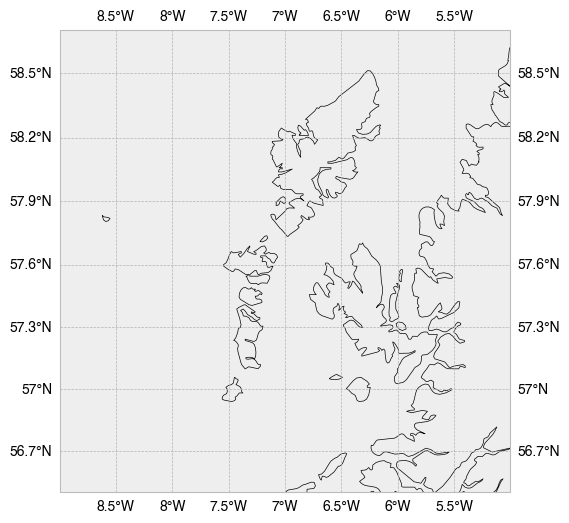

cartopy¶
[1]:
import pandas as pd
import numpy as np
import matplotlib.pyplot as plt
%matplotlib inline
plt.style.use('bmh')
[2]:
import cartopy.crs as ccrs
import cartopy.feature as cf
from cartopy.feature.nightshade import Nightshade
import datetime
[72]:
Nightshade()
[72]:
<cartopy.feature.nightshade.Nightshade at 0x7f933a62d640>
[20]:
fig = plt.figure(figsize=(12, 6))
ax = fig.add_subplot(1, 1, 1, projection=ccrs.InterruptedGoodeHomolosine())
ax.background_img()
ax.coastlines()
ax.add_feature(cf.LAND.with_scale('110m'))
ax.add_feature(cf.BORDERS)
ax.add_feature(cf.LAKES)
ax.add_feature(cf.RIVERS)
ax.add_feature(Nightshade(datetime.datetime.now(), delta=.1))
#ax = plt.axes(projection=ccrs.PlateCarree())
#ax.stock_img()
ny_lon, ny_lat = -75, 43
delhi_lon, delhi_lat = 77.23, 28.61
plt.plot([ny_lon, delhi_lon], [ny_lat, delhi_lat],
color='blue', linewidth=2, marker='o',
transform=ccrs.Geodetic(),
)
plt.plot([ny_lon, delhi_lon], [ny_lat, delhi_lat],
color='gray', linestyle='--',
transform=ccrs.PlateCarree(),
)
plt.text(ny_lon - 3, ny_lat - 12, 'New York',
horizontalalignment='right',
transform=ccrs.Geodetic())
plt.text(delhi_lon + 3, delhi_lat - 12, 'Delhi',
horizontalalignment='left',
transform=ccrs.Geodetic())
ax.gridlines(draw_labels=True)
#ax.tissot(alpha=.2, color='orange')
plt.show()
fig.savefig('test.pdf')
[5]:
from owslib.wmts import WebMapTileService
import cartopy.crs as ccrs
import matplotlib.pyplot as plt
url = 'http://map1c.vis.earthdata.nasa.gov/wmts-geo/wmts.cgi'
layer_name = 'MODIS_Terra_CorrectedReflectance_TrueColor'
extent = (28, 38, 25, 35)
axes_extent = (50, 53, 24, 27)
resolution = '110m'
wmts = WebMapTileService(url)
plt.figure(figsize=(10, 10))
ax = plt.subplot(3, 2, 1, projection=ccrs.PlateCarree(),
title='Axes empty - default WMTS extent')
ax.add_wmts(wmts, layer_name)
ax = plt.subplot(3, 2, 2, projection=ccrs.PlateCarree(),
title='Axes empty - explicit WMTS extent')
ax.add_wmts(wmts, layer_name, extent=extent)
ax = plt.subplot(3, 2, 3, projection=ccrs.PlateCarree(),
title='Axes w/ extent - default WMTS extent')
ax.set_xlim(axes_extent[:2])
ax.set_ylim(axes_extent[2:])
ax.coastlines(resolution=resolution)
ax.add_wmts(wmts, layer_name)
ax = plt.subplot(3, 2, 4, projection=ccrs.PlateCarree(),
title='Axes w/ extent - explicit WMTS extent')
ax.set_xlim(axes_extent[:2])
ax.set_ylim(axes_extent[2:])
ax.coastlines(resolution=resolution)
ax.add_wmts(wmts, layer_name, extent=extent)
ax = plt.subplot(3, 2, 5, projection=ccrs.PlateCarree(),
title='Global Axes - default WMTS extent')
ax.set_global()
ax.coastlines()
ax.add_wmts(wmts, layer_name)
ax = plt.subplot(3, 2, 6, projection=ccrs.PlateCarree(),
title='Global Axes - explicit WMTS extent')
ax.set_global()
ax.coastlines()
ax.add_wmts(wmts, layer_name, extent=extent)
plt.show()
[7]:
df = pd.read_clipboard(header=None)
[6]:
import cartopy.crs as ccrs
import matplotlib.pyplot as plt
fig = plt.figure(figsize=(10, 5))
ax = fig.add_subplot(1, 1, 1, projection=ccrs.InterruptedGoodeHomolosine())
ax.coastlines(lw=1)
ax.add_wms(wms='http://vmap0.tiles.osgeo.org/wms/vmap0',
layers=['basic'])
plt.show()
[63]:
from cartopy.io.img_tiles import Stamen
import cartopy.feature as cf
tiler = Stamen('terrain')
mercator = tiler.crs
fig = plt.figure(figsize=(10,10))
ax = fig.add_subplot(1, 1, 1, projection=mercator)
ax.set_extent([-9, 1, 54, 60], crs=ccrs.PlateCarree())
ax.add_image(tiler, 6)
ax.coastlines('10m', lw=.5)
ax.add_feature(cf.LAND)
ax.gridlines()
#ax.plot(lat, lon, transform=ccrs.Geodetic(), c='r')
plt.show()
[81]:
import cartopy.feature as cf
from cartopy.io.img_tiles import Stamen
import cartopy.feature as cf
fig = plt.figure(figsize=(6,6))
ax = fig.add_subplot(1, 1, 1, projection=ccrs.Mercator())
ax.set_extent([-9, -5, 56.5, 58.7], crs=ccrs.PlateCarree())
ax.gridlines(draw_labels=True)
ax.add_feature(cf.COASTLINE.with_scale('10m'))
ax.
---------------------------------------------------------------------------
KeyError Traceback (most recent call last)
~/opt/anaconda3/envs/py3/lib/python3.9/site-packages/cartopy/mpl/geoaxes.py in background_img(self, name, resolution, extent, cache)
1118 try:
-> 1119 fname = _USER_BG_IMGS[name][resolution]
1120 except KeyError:
KeyError: 'med'
During handling of the above exception, another exception occurred:
ValueError Traceback (most recent call last)
/var/folders/c9/7yddvl1n2ss863cgfngj0wpm0000gp/T/ipykernel_54423/2279862871.py in <module>
10 ax.gridlines(draw_labels=True)
11 ax.add_feature(cf.COASTLINE.with_scale('10m'))
---> 12 ax.background_img(resolution='med')
~/opt/anaconda3/envs/py3/lib/python3.9/site-packages/cartopy/mpl/geoaxes.py in background_img(self, name, resolution, extent, cache)
1119 fname = _USER_BG_IMGS[name][resolution]
1120 except KeyError:
-> 1121 raise ValueError(
1122 f'Image {name!r} and resolution {resolution!r} are not '
1123 f'present in the user background image metadata in directory '
ValueError: Image 'ne_shaded' and resolution 'med' are not present in the user background image metadata in directory '/Users/jtm545/opt/anaconda3/envs/py3/lib/python3.9/site-packages/cartopy/data/raster/natural_earth'

[20]:
# Define resource for the NASA night-time illumination data.
base_uri = 'http://map1c.vis.earthdata.nasa.gov/wmts-geo/wmts.cgi'
layer_name = 'VIIRS_CityLights_2012'
# Create a Cartopy crs for plain and rotated lat-lon projections.
plain_crs = ccrs.PlateCarree()
rotated_crs = ccrs.RotatedPole(pole_longitude=120.0, pole_latitude=45.0)
fig = plt.figure()
# Plot WMTS data in a specific region, over a plain lat-lon map.
ax = fig.add_subplot(1, 2, 1, projection=plain_crs)
ax.set_extent([-6, 3, 48, 58], crs=ccrs.PlateCarree())
ax.coastlines(resolution='50m', color='yellow')
ax.gridlines(color='lightgrey', linestyle='-')
# Add WMTS imaging.
ax.add_wmts(base_uri, layer_name=layer_name)
# Plot WMTS data on a rotated map, over the same nominal region.
ax = fig.add_subplot(1, 2, 2, projection=rotated_crs)
ax.set_extent([-6, 3, 48, 58], crs=ccrs.PlateCarree())
ax.coastlines(resolution='50m', color='yellow')
ax.gridlines(color='lightgrey', linestyle='-')
# Add WMTS imaging.
ax.add_wmts(base_uri, layer_name=layer_name)
plt.show()
/Users/jtm545/opt/anaconda3/envs/py3/lib/python3.9/site-packages/owslib/wmts.py:643: RuntimeWarning: TileMatrixLimits with tileMatrix "1" already exists
warnings.warn(msg, RuntimeWarning)
/Users/jtm545/opt/anaconda3/envs/py3/lib/python3.9/site-packages/owslib/wmts.py:643: RuntimeWarning: TileMatrixLimits with tileMatrix "2" already exists
warnings.warn(msg, RuntimeWarning)
/Users/jtm545/opt/anaconda3/envs/py3/lib/python3.9/site-packages/owslib/wmts.py:643: RuntimeWarning: TileMatrixLimits with tileMatrix "3" already exists
warnings.warn(msg, RuntimeWarning)
/Users/jtm545/opt/anaconda3/envs/py3/lib/python3.9/site-packages/owslib/wmts.py:643: RuntimeWarning: TileMatrixLimits with tileMatrix "4" already exists
warnings.warn(msg, RuntimeWarning)
/Users/jtm545/opt/anaconda3/envs/py3/lib/python3.9/site-packages/owslib/wmts.py:643: RuntimeWarning: TileMatrixLimits with tileMatrix "5" already exists
warnings.warn(msg, RuntimeWarning)
/Users/jtm545/opt/anaconda3/envs/py3/lib/python3.9/site-packages/owslib/wmts.py:643: RuntimeWarning: TileMatrixLimits with tileMatrix "6" already exists
warnings.warn(msg, RuntimeWarning)
[26]:
df = pd.read_csv('../data/hebway.csv')
---------------------------------------------------------------------------
ParserError Traceback (most recent call last)
/var/folders/c9/7yddvl1n2ss863cgfngj0wpm0000gp/T/ipykernel_45507/2060384153.py in <module>
----> 1 df = pd.read_csv('../data/hebway.csv')
~/opt/anaconda3/envs/py3/lib/python3.9/site-packages/pandas/util/_decorators.py in wrapper(*args, **kwargs)
309 stacklevel=stacklevel,
310 )
--> 311 return func(*args, **kwargs)
312
313 return wrapper
~/opt/anaconda3/envs/py3/lib/python3.9/site-packages/pandas/io/parsers/readers.py in read_csv(filepath_or_buffer, sep, delimiter, header, names, index_col, usecols, squeeze, prefix, mangle_dupe_cols, dtype, engine, converters, true_values, false_values, skipinitialspace, skiprows, skipfooter, nrows, na_values, keep_default_na, na_filter, verbose, skip_blank_lines, parse_dates, infer_datetime_format, keep_date_col, date_parser, dayfirst, cache_dates, iterator, chunksize, compression, thousands, decimal, lineterminator, quotechar, quoting, doublequote, escapechar, comment, encoding, encoding_errors, dialect, error_bad_lines, warn_bad_lines, on_bad_lines, delim_whitespace, low_memory, memory_map, float_precision, storage_options)
676 kwds.update(kwds_defaults)
677
--> 678 return _read(filepath_or_buffer, kwds)
679
680
~/opt/anaconda3/envs/py3/lib/python3.9/site-packages/pandas/io/parsers/readers.py in _read(filepath_or_buffer, kwds)
579
580 with parser:
--> 581 return parser.read(nrows)
582
583
~/opt/anaconda3/envs/py3/lib/python3.9/site-packages/pandas/io/parsers/readers.py in read(self, nrows)
1251 nrows = validate_integer("nrows", nrows)
1252 try:
-> 1253 index, columns, col_dict = self._engine.read(nrows)
1254 except Exception:
1255 self.close()
~/opt/anaconda3/envs/py3/lib/python3.9/site-packages/pandas/io/parsers/c_parser_wrapper.py in read(self, nrows)
223 try:
224 if self.low_memory:
--> 225 chunks = self._reader.read_low_memory(nrows)
226 # destructive to chunks
227 data = _concatenate_chunks(chunks)
~/opt/anaconda3/envs/py3/lib/python3.9/site-packages/pandas/_libs/parsers.pyx in pandas._libs.parsers.TextReader.read_low_memory()
~/opt/anaconda3/envs/py3/lib/python3.9/site-packages/pandas/_libs/parsers.pyx in pandas._libs.parsers.TextReader._read_rows()
~/opt/anaconda3/envs/py3/lib/python3.9/site-packages/pandas/_libs/parsers.pyx in pandas._libs.parsers.TextReader._tokenize_rows()
~/opt/anaconda3/envs/py3/lib/python3.9/site-packages/pandas/_libs/parsers.pyx in pandas._libs.parsers.raise_parser_error()
ParserError: Error tokenizing data. C error: Expected 3 fields in line 5, saw 7
[28]:
d = '-7.53548 56.92723, -7.53269 56.927130000000005, -7.52755 56.92852, -7.520599999999999 56.93293, -7.518930000000001 56.93509, -7.52099 56.93671, -7.536749999999999 56.93807, -7.54234 56.93933, -7.54204 56.94036, -7.54338 56.94353, -7.536020000000001 56.94609, -7.533150000000001 56.94586, -7.531 56.94766, -7.52547 56.94773, -7.52019 56.94839, -7.51788 56.947970000000005, -7.512899999999999 56.94874, -7.509699999999999 56.95097, -7.510559999999999 56.95246, -7.50751 56.95326, -7.504720000000001 56.95911, -7.51602 56.96884, -7.516580000000001 56.97071, -7.515119999999999 56.97223, -7.51744 56.974920000000004, -7.51727 56.97815, -7.51259 56.97906, -7.508170000000001 56.98782, -7.509909999999999 56.98972, -7.50738 56.99447, -7.504330000000001 56.99971, -7.49643 57.0031, -7.48479 57.00085, -7.48105 57.00174, -7.4752600000000005 57.00116, -7.455660000000001 57.00177, -7.45326 57.00249, -7.444799999999999 57.00181, -7.430510000000001 57.0017, -7.428020000000001 57.00492, -7.429619999999999 57.00811, -7.42911 57.00925, -7.433230000000001 57.01189, -7.429840000000001 57.01212, -7.4304 57.01318, -7.4237 57.00972, -7.410269999999999 57.00746, -7.40379 57.00858, -7.30771 57.07015, -7.300880000000001 57.0742, -7.303450000000001 57.0763, -7.30231 57.08032, -7.3033399999999995 57.08328, -7.30591 57.08442, -7.305960000000001 57.08554, -7.30437 57.08571, -7.30677 57.08767, -7.30973 57.08837, -7.317240000000001 57.09437, -7.31802 57.10475, -7.32093 57.1058, -7.32415 57.1057, -7.326770000000001 57.10463000000001, -7.32651 57.10349, -7.33986 57.10295, -7.34638 57.1037, -7.355780000000001 57.10302, -7.3578600000000005 57.10253, -7.36559 57.10456, -7.37284 57.10938, -7.364649999999999 57.11619, -7.35998 57.12347, -7.360549999999999 57.12902, -7.365620000000001 57.12809, -7.372869999999999 57.12835, -7.3775900000000005 57.12919, -7.387380000000001 57.13056, -7.387380000000001 57.13706, -7.38682 57.14085, -7.39123 57.15249, -7.38723 57.15158, -7.377720000000001 57.15755, -7.3855900000000005 57.16313, -7.388639999999999 57.16373, -7.38778 57.16473, -7.385720000000001 57.16541000000001, -7.382070000000001 57.16552, -7.3798 57.16532, -7.375030000000001 57.16653, -7.3737 57.16753, -7.373170000000001 57.1676, -7.3731100000000005 57.16795'
[39]:
latlon = [s.strip().split(' ') for s in d.split(',')]
lat = [float(l[0]) for l in latlon]
lon = [float(l[1]) for l in latlon]
[38]:
lat
[38]:
[-7.53548,
-7.53269,
-7.52755,
-7.520599999999999,
-7.518930000000001,
-7.52099,
-7.536749999999999,
-7.54234,
-7.54204,
-7.54338,
-7.536020000000001,
-7.533150000000001,
-7.531,
-7.52547,
-7.52019,
-7.51788,
-7.512899999999999,
-7.509699999999999,
-7.510559999999999,
-7.50751,
-7.504720000000001,
-7.51602,
-7.516580000000001,
-7.515119999999999,
-7.51744,
-7.51727,
-7.51259,
-7.508170000000001,
-7.509909999999999,
-7.50738,
-7.504330000000001,
-7.49643,
-7.48479,
-7.48105,
-7.4752600000000005,
-7.455660000000001,
-7.45326,
-7.444799999999999,
-7.430510000000001,
-7.428020000000001,
-7.429619999999999,
-7.42911,
-7.433230000000001,
-7.429840000000001,
-7.4304,
-7.4237,
-7.410269999999999,
-7.40379,
-7.30771,
-7.300880000000001,
-7.303450000000001,
-7.30231,
-7.3033399999999995,
-7.30591,
-7.305960000000001,
-7.30437,
-7.30677,
-7.30973,
-7.317240000000001,
-7.31802,
-7.32093,
-7.32415,
-7.326770000000001,
-7.32651,
-7.33986,
-7.34638,
-7.355780000000001,
-7.3578600000000005,
-7.36559,
-7.37284,
-7.364649999999999,
-7.35998,
-7.360549999999999,
-7.365620000000001,
-7.372869999999999,
-7.3775900000000005,
-7.387380000000001,
-7.387380000000001,
-7.38682,
-7.39123,
-7.38723,
-7.377720000000001,
-7.3855900000000005,
-7.388639999999999,
-7.38778,
-7.385720000000001,
-7.382070000000001,
-7.3798,
-7.375030000000001,
-7.3737,
-7.373170000000001,
-7.3731100000000005]
[42]:
import matplotlib.pyplot as plt
import matplotlib.patheffects as PathEffects
from owslib.wmts import WebMapTileService
import cartopy.crs as ccrs
# URL of NASA GIBS
URL = 'http://gibs.earthdata.nasa.gov/wmts/epsg4326/best/wmts.cgi'
wmts = WebMapTileService(URL)
# Layers for MODIS true color and snow RGB
layers = ['MODIS_Terra_SurfaceReflectance_Bands143',
'MODIS_Terra_CorrectedReflectance_Bands367']
date_str = '2016-02-05'
# Plot setup
plot_CRS = ccrs.Mercator()
geodetic_CRS = ccrs.Geodetic()
x0, y0 = plot_CRS.transform_point(4.6, 43.1, geodetic_CRS)
x1, y1 = plot_CRS.transform_point(11.0, 47.4, geodetic_CRS)
ysize = 8
xsize = 2 * ysize * (x1 - x0) / (y1 - y0)
fig = plt.figure(figsize=(xsize, ysize), dpi=100)
for layer, offset in zip(layers, [0, 0.5]):
ax = fig.add_axes([offset, 0, 0.5, 1], projection=plot_CRS)
ax.set_xlim((x0, x1))
ax.set_ylim((y0, y1))
ax.add_wmts(wmts, layer, wmts_kwargs={'time': date_str})
txt = ax.text(4.7, 43.2, wmts[layer].title, fontsize=18, color='wheat',
transform=geodetic_CRS)
txt.set_path_effects([PathEffects.withStroke(linewidth=5,
foreground='black')])
plt.show()
/Users/jtm545/opt/anaconda3/envs/py3/lib/python3.9/site-packages/owslib/wmts.py:643: RuntimeWarning: TileMatrixLimits with tileMatrix "1" already exists
warnings.warn(msg, RuntimeWarning)
/Users/jtm545/opt/anaconda3/envs/py3/lib/python3.9/site-packages/owslib/wmts.py:643: RuntimeWarning: TileMatrixLimits with tileMatrix "2" already exists
warnings.warn(msg, RuntimeWarning)
/Users/jtm545/opt/anaconda3/envs/py3/lib/python3.9/site-packages/owslib/wmts.py:643: RuntimeWarning: TileMatrixLimits with tileMatrix "3" already exists
warnings.warn(msg, RuntimeWarning)
/Users/jtm545/opt/anaconda3/envs/py3/lib/python3.9/site-packages/owslib/wmts.py:643: RuntimeWarning: TileMatrixLimits with tileMatrix "4" already exists
warnings.warn(msg, RuntimeWarning)
/Users/jtm545/opt/anaconda3/envs/py3/lib/python3.9/site-packages/owslib/wmts.py:643: RuntimeWarning: TileMatrixLimits with tileMatrix "5" already exists
warnings.warn(msg, RuntimeWarning)
/Users/jtm545/opt/anaconda3/envs/py3/lib/python3.9/site-packages/owslib/wmts.py:643: RuntimeWarning: TileMatrixLimits with tileMatrix "6" already exists
warnings.warn(msg, RuntimeWarning)
[14]:
from owslib.wms import WebMapService
wms_url = 'https://ows.terrestris.de/osm/service'
wms = WebMapService(wms_url, version="1.3.0")
print(f'WMS title: {wms.identification.title}')
print(f'WMS abstract: {wms.identification.abstract}')
print(f'Provider name: {wms.provider.name}')
print(f'Provider address: {wms.provider.contact.address}')
WMS title: OpenStreetMap WMS
WMS abstract: OpenStreetMap WMS, bereitgestellt durch terrestris GmbH und Co. KG. Beschleunigt mit MapProxy (http://mapproxy.org/)
Provider name: terrestris GmbH und Co. KG
Provider address: Kölnstr. 99
[17]:
img = wms.getmap(
layers=['SRTM30-Colored'],
size=[600, 400],
srs="EPSG:4326",
bbox=[1.0, 50.0, 10.0, 54.0],
format="image/jpeg")
save_fp = './10-wms.png'
with open(save_fp, 'wb') as out:
out.write(img.read())
[19]:
from IPython.display import Image
Image(filename=save_fp)
[19]:
[3]:
from matplotlib.path import Path
import matplotlib.pyplot as plt
import numpy as np
import cartopy.crs as ccrs
from cartopy.io.img_tiles import OSM
def tube_locations():
"""
Return an (n, 2) array of selected London Tube locations in Ordnance
Survey GB coordinates.
Source: https://www.doogal.co.uk/london_stations.php
"""
return np.array([[531738., 180890.], [532379., 179734.],
[531096., 181642.], [530234., 180492.],
[531688., 181150.], [530242., 180982.],
[531940., 179144.], [530406., 180380.],
[529012., 180283.], [530553., 181488.],
[531165., 179489.], [529987., 180812.],
[532347., 180962.], [529102., 181227.],
[529612., 180625.], [531566., 180025.],
[529629., 179503.], [532105., 181261.],
[530995., 180810.], [529774., 181354.],
[528941., 179131.], [531050., 179933.],
[530240., 179718.]])
imagery = OSM()
fig = plt.figure()
ax = fig.add_subplot(1, 1, 1, projection=imagery.crs)
ax.set_extent([-0.14, -0.1, 51.495, 51.515], ccrs.PlateCarree())
# Construct concentric circles and a rectangle,
# suitable for a London Underground logo.
theta = np.linspace(0, 2 * np.pi, 100)
circle_verts = np.vstack([np.sin(theta), np.cos(theta)]).T
concentric_circle = Path.make_compound_path(Path(circle_verts[::-1]),
Path(circle_verts * 0.6))
rectangle = Path([[-1.1, -0.2], [1, -0.2], [1, 0.3], [-1.1, 0.3]])
# Add the imagery to the map.
ax.add_image(imagery, 14)
# Plot the locations twice, first with the red concentric circles,
# then with the blue rectangle.
xs, ys = tube_locations().T
ax.plot(xs, ys, transform=ccrs.OSGB(approx=False),
marker=concentric_circle, color='red', markersize=9, linestyle='')
ax.plot(xs, ys, transform=ccrs.OSGB(approx=False),
marker=rectangle, color='blue', markersize=11, linestyle='')
ax.set_title('London underground locations')
plt.show()
[ ]:
imagery = OSM()
fig = plt.figure()
ax = fig.add_subplot(1, 1, 1, projection=imagery.crs)
# Add the imagery to the map.
ax.add_image(imagery, 14)
[ ]: